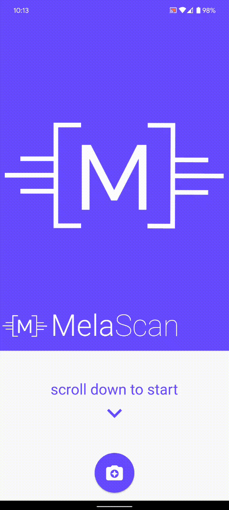
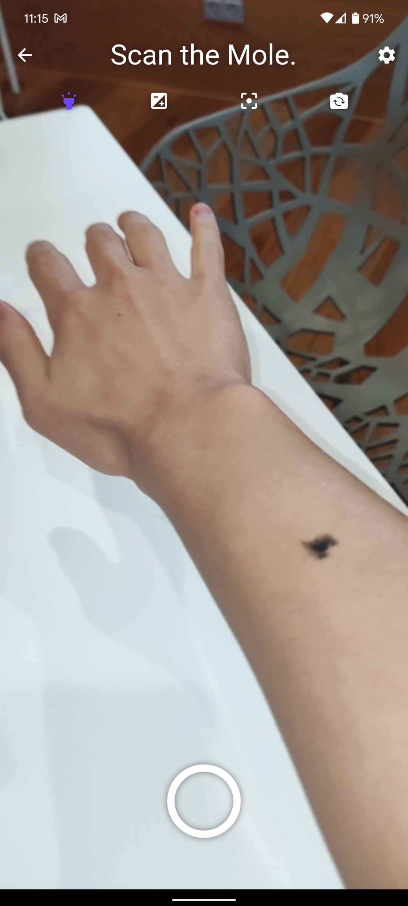
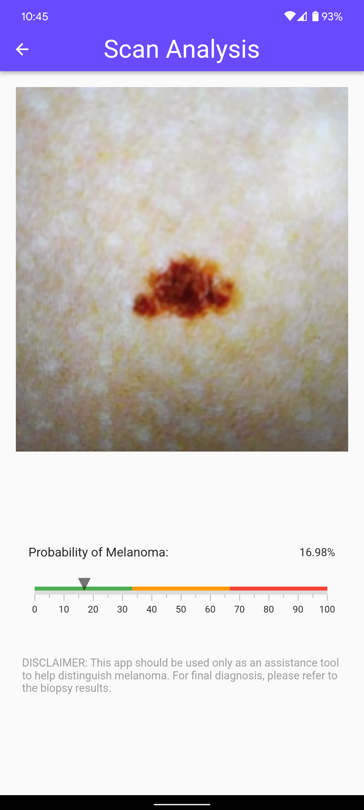
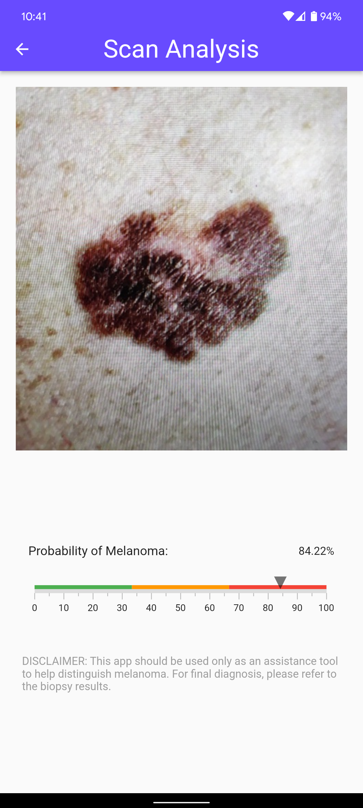

TUM.ai Makeathon: Skin Cancer Detection App
I joined the TUM.ai makeathon without much thought or preperation. I just wanted to make something cool and eat free pizza, and I think I did (both)! We made an app that can use the smartphone camera to detect melanoma (deadliest type of skin cancer) at an early stage, since it's very easily treatable at that point (just cut it off and put a bandade over it), but most deaths result from it being overlooked by doctors until it's too late.
For the 48h makeathon, I managed to assemble a team after lots of chaos, and originally convinced them to make an extension for social media, let's say twitter, where it would use NLP to try to analyse a post's opinion on a certain topic and try to recommend you a broad selection of posts with explicitly different opinions and perspectives.
The idea was that social media tends to put people in a bubble or an echo chamber, where their opinions get more and more extreme; therefore showing a much more broader and balanced set of ideas that much more accurately represents the spectrum/consensus of the public might help combat toxicity on the internet, and in turn, in society.
But then after the actual challenges were publicized, we decided on the melanoma detection instead, since it looked more impactful and interesting. I mostly took care of the Flutter front-end, and the python backend for the inference using a PyTorch model, both of which I didn't have too much experience with. So I had to basically learn everything on-the-fly which resulted in me working for around 30h until the end of the deadline and pitch.
I actually quite like Flutter and found it pretty easy, since Dart is very Java-like with a lot of nice modern syntactic sugar sprinkled on top, and the UI framework is very polished.
Anyways being my first makeathon/hackathon, I had a lot of fun and am proud of everything we learned and pulled off. It was very much worth the lack of sleep! There could have been more free pizza though, a lot of us were kind of starving...
We named it MelaScan and the goal of the app was simplicity and minimizing the time required from tapping the app icon until the analysis result is shown. For more details, see our embedded pitch slides below or visit the project on DevPost.
   
Our Final Pitch Slides: